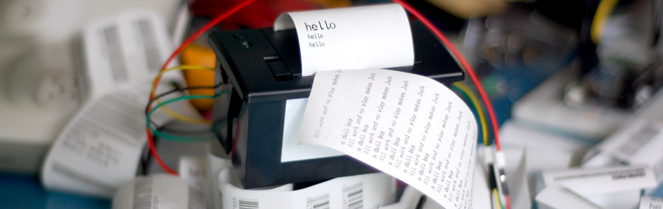

Displaying on Paper - Thermal Printer + Arduino

Outputting data can be extremely useful, and typically when we look at doing this, it is either to the Arduino's serial terminal, or to some sort of display. But what about making physical copies of the data? So a few months back, SparkFun started selling a thermal printer that you could connect to a microcontroller (or via adafruit ). That same day my brain filled with crazy thing you could do with it, like a giant fortune cookie that could print your fortune on the fly.
Anyways... If you dont know about thermal printers, they are most often the printers your store's receipts are printed on. The reason for this is that they dont use ink, or use a cartridge of any sort. The paper it prints on turns black when heated. So this printer simply applies heat where another printer would apply ink. Eventually the printers head will wear out, but this after several miles of printing. Yes, miles - about 30 of them. So given that the rolls of paper are 34ft long, you can print about 4,600 rolls before the print head dies, meaning for most of us, you will never see that happen.
Hooking it up
So this printer can be powered off of 5V, but NOT the 5v pin on your arduino, and no via USB. It uses very little power when it is is just sitting by, but uses around a full amp when it is printing! And because the most USB can handle is half of that, we need an external power supply. Something between 5 and 9V, and a minimum of 1400ma output (larger is fine). I found that powering the printer with 9v, it printed much faster, and slightly darker than 5v, and if you have it available, I recommend using 9v.
There are two ways of connecting the power supply as shown in the illustrations. You can either power your arduino and the printer separately, or you can power the arduino, and power the printer off of the arduino.
To do the latter, the printer's power wire (red) needs to connect to the VIN pin on the arduino, not the 5v pin. The reason is that the 5v pin goes through a regulator and is not meant to supply this kind of power, but the VIN pin is directly connected to the power input on the arduino. So it can supply much more.
Now just connect the rest of the wires as shown.
Code
The printer needs a serial connection to the arduino. And normally that would mean we would connect to digital pins 0,1 but, if we did this, anything you printed to the serial terminal for debugging or otherwise the printer would see and possibly print out. We don't want that, so we will be using a libraty so that you can keep those pins free.
This printer has a huge amount of features. 2 different barcode, text output, size settings etc, and each one needs a new configuration to get it working. So we created a library for this so that you could keep your code clean, and simple.
{kind=link}
{kind=link}
To make this code work, before you load the code, or even open the Arduino program, we need to place the "Thermal" folder into your Arduino Library. If you don’t know where that is by default, Look to the right.
If you click the download button to the right of “Arduino” you can download the whole thing as a zip, so you dont need to copy all the files.
Default Library Folder Location
On your Mac:: In (home directory)/Documents/Arduino/libraries
On your PC:: My Documents -> Arduino -> libraries
On your Linux box:: (home directory)/sketchbook/libraries
darkness And Speed Calibration
If you want to get a little more speed, or darkness out of the printer, you can change some settings in the thermal.cpp file of the Thermal library.
heatTime = 120; //80 is default from page 23 of datasheet. Controls speed of printing and darkness heatInterval = 50; //2 is default from page 23 of datasheet. Controls speed of printing and darkness
Changing heatTime and heatInterval to lower values, will yield a faster, but lighter printing, and raising them will yield a slower, but darker printing. If you are running off of 5V, and find the printing too light, try changing both values to 255.
You can make changes to the file with the arduino sketch open. Just save the Thermal.cpp file and re-upload the sketch to see the changes.
Help expand the library
We would love help expanding the library if you are interested. We would like to add to support for bitmap printing and other text setting. Also there may be a better way to set many of the settings than we are now. If you are interested in helping, let us know in the forum.
Article taken from bildr.org with minor changes - I am the original author of this content